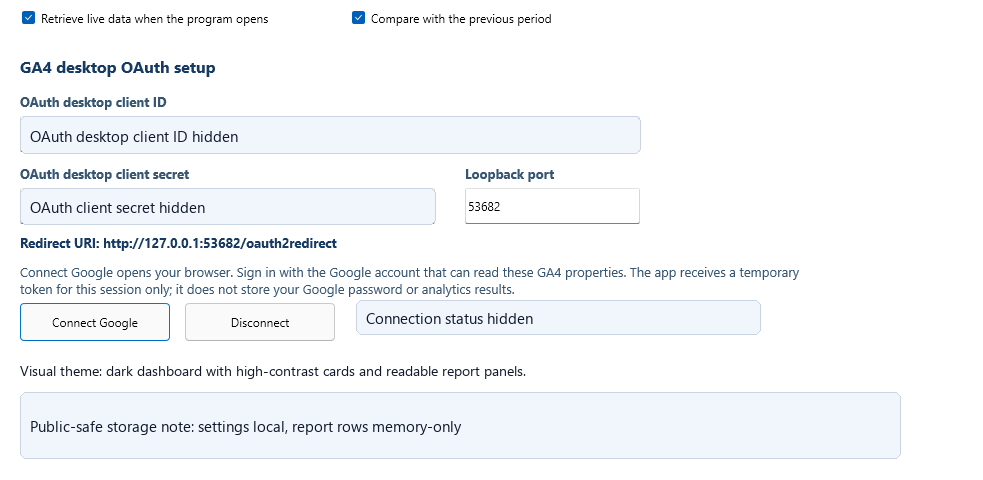

Quick Start

First setup connects your own Google OAuth desktop client and your own GA4 properties.
- Enter your OAuth desktop client ID and client secret in Settings.
- Use the numeric GA4 property ID in Properties.
- Click Connect Google once, complete browser sign-in, then return to the app and update.
- After first sign-in, startup should reconnect silently if the encrypted refresh token is still valid.